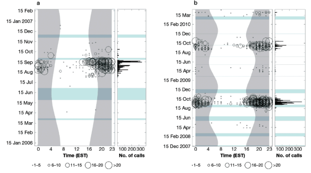
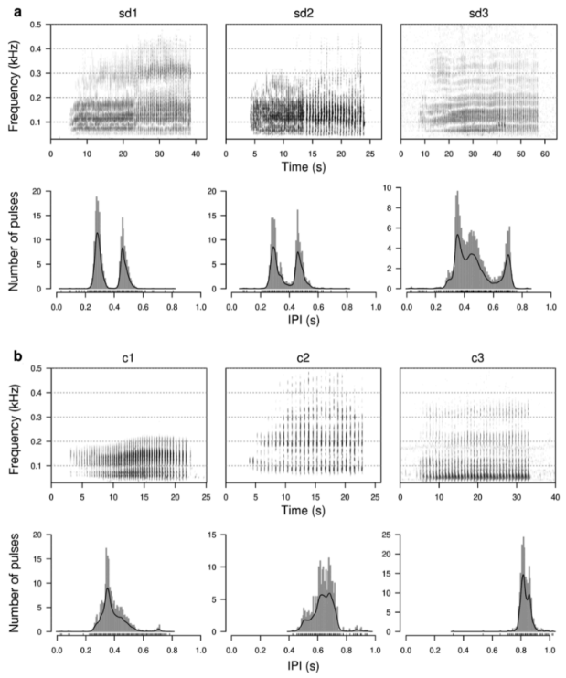
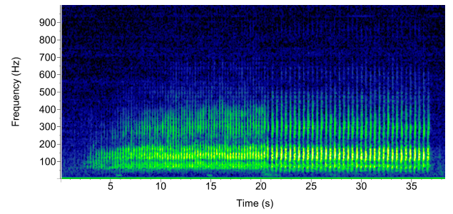
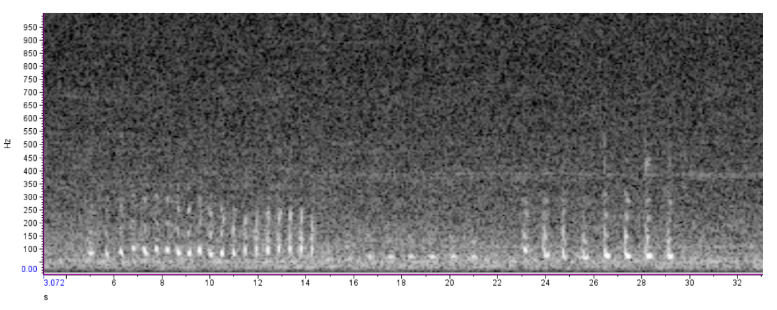

Minke Whale (Balaenoptera acutorostrata)
Acoustic Event Guide
Note: While there are other minke whale call types described in the literature for other populations, the NEFSC Passive Acoustics Branch only uses pulse trains for determining daily presence of minke whales in our archival data collected in the western North Atlantic. The detection data for minke whales has not yet been added to our Passive Acoustic Cetacean Map (PACM), therefore a map of their acoustic detections is not included in this guide at this time.
General
The information published on minke whale vocalizations is currently limited. In the Southern and Pacific oceans they make a variety of low- and mid-frequency calls, but the most frequent vocalization observed in the Atlantic Ocean are low-frequency pulse trains.
- Pulse Trains:
- Stereotyped, 50-500 Hz thumps or pulses, each lasting ~0.5-0.7 s
- Pulse trains can last 40-60 s and occur every 6-14 minutes in bouts that can last up to several hours
- Some pulse trains have pulses that remain at a constant interpulse interval (IPI), while other pulse trains show a slight but abrupt slow-down in pulses and lengthening of IPI approximately halfway through the pulse train (Risch et al., 2013; see Fig. 2a). There are also speed-up pulse trains that show the reverse trend with decreasing IPIs toward the end of the pulse train.
- Minkes are also known to create variations of pulse trains, with seasonal variation in pulse train length and IPIs (see Fig. 4, 5, and 6).
When analyzing data for minke whale pulse trains, it is important to keep in mind that haddock (fish) can produce knocking/thumping sounds (see Fig. 7) that can individually resemble minke whale pulses. Most minke whale pulse trains are at least 20 seconds long, and can last up to 60 seconds, whereas haddock knock sequences are generally shorter in duration and may last only a few seconds. Haddock knock sequences may also occur much closer together and even blur into a humming sound if there are many individuals knocking simultaneously. Minke whales generally have an interval of 6-14 minutes between their pulse trains, although shorter intervals may be observed if there are multiple individuals.
Additionally, both minke whales and haddock show strong diel trends in their sound production but at different times of year. During the peak season of July to November, minke whales have been shown to produce the vast majority of their pulse trains during the twilight and nighttime hours (see Fig. 1). Haddock also generally produce more knocks at night, especially by males during their spawning season of January to June.
Minke whales are more likely to be detected from July to November in the Stellwagen Bank National Marine Sanctuary (SBNMS), with detections peaking in the August-October period. They are usually not detected in January and February, and rarely detected from March to June. Visual sightings data generally aligns with the acoustic detection data, indicating that the SBNMS may be a transitory location for minke whales as they migrate along the U.S. and Canadian east coasts. The lack of acoustic detections in the spring may suggest that they migrate further offshore on their northbound migration to their summer feeding grounds.
Minke Whale seasonal Occurence and Diel Patterns

Figure 1. Seasonal and diel distribution of minke whale pulse trains in (a) 2006 and (b) from December 2007 to March 2010 in the Stellwagen Bank National Marine Sanctuary (SBNMS). Distributions are based on analyses of automatic detection results of 1 channel data. Y-axis shows date; left x-axis time of day (h) in U.S. Eastern Standard Time (EST); right x-axis number of calls. Grey shading illustrates times between sunset and sunrise. Light blue shading indicates periods of missing data. Circles indicate the number of calls per hour (Risch et al., 2013, Fig. 5).
Minke Whale Vocalizations Documented in Literature

Figure 2. Spectrograms for (a) slow-down (sd) and (b) constant (c)pulse trains types 1-3 and histograms of interpulse interval (IPI). Note the different x- and y-axes scales for the spectrograms and histograms, respectively (Risch et al., 2013, Fig. 3).
Minke Whale Vocalizations Observed by the Passive Acoustics Branch

Figure 3. Example of a slow-down minke whale pulse train with fin whale 20-Hz pulses below it.
Minke Whale Pulse Train Variations

Figure 6. Example of multiple variations of minke whale pulse trains over ~7 minutes recorded on COX03 on July 28, 2023.
Examples of Non-Minke Whale Sounds
Figure 9. Example of anthropogenic noise that can resemble a minke whale pulse train.